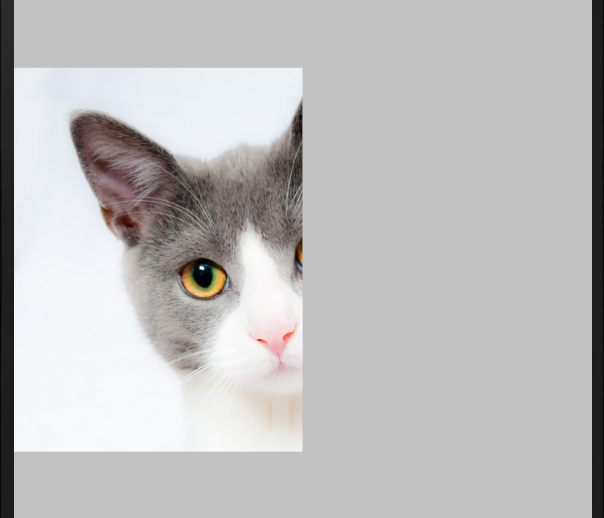

1. drawable 简述
drawable 在 Android 中是一个抽象的概念, 对应抽象类 android.graphics.drawable.Drawable, 包括了各种形式的图片, 层级样式, 状态样式等. drawable 可以在 res/drawable 中以 xml 来定义. 也可以在 java 中生成. 大概分为以下 10 种.
- Bitmap File
.png(最好),.jpg(次),.gif(尽量不要用)等格式的图片. 对应BitmapDrawable - Nine-Patch File
.9.png图片.对应NinePatchDrawable - Layer List 多层次 drawable 数组, 按层绘制到屏幕, 下标大的会绘制在上面, 小的绘制在下面. 对应
LayerDrawable - State List 状态数组, 比如选中, 未选中, 点击等状态. 对应
StateListDrawable - Level List 等级 drawable 数组, 数组中每个 Item 都有一个 minLevel, maxLevel, 可以使用
View#setLevel(),ImageView#setImageLevel()来设置按等级获取图片. 对应LevelListDrawable - Transition Drawable 定义了 drawable 之间过滤的形式, 对应
TransitionDrawable - Inset Drawable 定义了一个 drawable 以一个范围差值插入另一个 drawable 中. 比如向一个 view 插入 drawable, 但这个 drawable 比 view 的边界大或小, 可以使用这个来放大或缩小到实际边界. 对应
InsetDrawable - Clip Drawable 一个切割其他 drawable 的 drawable. 对应
ClipDrawable - Scale Drawable 一个定义了如何放大缩小的 drawable. 对应
ScaleDrawable - Shape Drawable 定义了矩形, 椭圆, 圆, 直线等几何形状, 包含渐变, 颜色的 drawable. 对应
GradientDrawable - Rotate Drawable 定义了图形可旋转的角度, 对应
RotateDrawable
2. BitmapDrawable(bitmap 标签)
创建方法一是直接把 .png, .jpg, .gif 图片放在 res/drawable 目录下, 通过 R.drawable.name 访问. 二是通过 xml 来创建, 使用 bitmap 为根结点, 也是放在 drawable 目录下, 通过 xml 创建可以对图片进行一些其他比如变形, 前景等更改
<?xml version="1.0" encoding="utf-8"?>
<bitmap
xmlns:android="http://schemas.android.com/apk/res/android"
android:src="@[package:]drawable/drawable_resource"
android:antialias=["true" | "false"]
android:dither=["true" | "false"]
android:filter=["true" | "false"]
android:gravity=["top" | "bottom" | "left" | "right" | "center_vertical" |
"fill_vertical" | "center_horizontal" | "fill_horizontal" |
"center" | "fill" | "clip_vertical" | "clip_horizontal"]
android:mipMap=["true" | "false"]
android:tileMode=["disabled" | "clamp" | "repeat" | "mirror"] />android:src图片来源, 可以是其他 drawableandroid:antialias是否开启抗锯齿, 一般都开启以便获得更好的显示效果android:dither是否开启抖动, 当屏幕与图片的像素配置不同时会用到, 比如屏幕是 RGB565, 图片是 ARGB8888. 一般都不开启android:filter是否开启过滤以便在图片缩小或放大时获得更平滑的过滤效果android:gravity图片对齐方法android:mipMap设置是否可以使用 mipmap，但 API Level 最低要求是 17，即 Android 4.2android:tileMode平铺模式.disabled禁用,clamp平铺,repeat重复,mirror镜像, 以对称翻转铺满.android:autoMirrored设置图片是否需要镜像反转，当布局方向是 RTL，即从右到左布局时才有用，API Level 19(Android 4.4) 才添加的属性android:tintMode着色模式，也是 API Level 21(Android 5.0) 才添加的属性android:tileModeX,android:tileModeY水平, 垂直平铺.
3. 点九图片(nine-path 标签)
nine-patch 图片一般都用工具生成, 其 左 和 上 边线规定了纵向和橫向拉伸时使用的平铺区域, 右 和 下 边线规定了内容区.
<?xml version="1.0" encoding="utf-8"?>
<nine-patch
xmlns:android="http://schemas.android.com/apk/res/android"
android:src="@[package:]drawable/drawable_resource"
android:dither=["true" | "false"] />android:src必须是 nine-path 图片
另外还有 android:dither, android:tint, android:tintMode, android:alpha 图片透明度, 0.0-1.0 之间, android:autoMirrored 属性
4. LayerDrawable (layer-list 标签)
layer-list 会把一组设置好的 drawable 按顺序从堆叠起来. 跟 level-list 区别的, layer-list 是一个组全, level-list 是按需选取其中的对应等级的图片.
<?<?xml versionxml ver ="1.0" encoding="utf-8"?>
<layer-list
xmlns:android="http://schemas.android.com/apk/res/android" >
<item
android:drawable="@[package:]drawable/drawable_resource"
android:id="@[+][package:]id/resource_name"
android:top="dimension"
android:right="dimension"
android:bottom="dimension"
android:left="dimension" />
</layer-list>android:top, android:right, android:bottom, android:left 是上右下左的偏移量, 注意这个偏移不会超出 view 的大小. 比如当设定这个为背景时, 背景大小 = view大小 - 左偏移量大小.
所以一般为保证偏移后, 内容区还是显示为居中, 四个方向都作偏移, 然后在显示的另一层里不需要显示出来的作偏移
<TextView
android:layout_width="match_parent"
android:layout_height="wrap_content"
android:layout_margin="16dp"
android:background="@drawable/bg_shadow_corners_rectangle"
android:gravity="center"
android:padding="16dp"
android:text=" 带阴影的圆角矩形 " />
<?xml version="1.0" encoding="utf-8"?>
<layer-list xmlns:android="http://schemas.android.com/apk/res/android">
<!-- 灰色阴影 -->
<item
android:left="2dp"
android:top="4dp">
<shape>
<solid android:color="@android:color/darker_gray" />
<corners android:radius="10dp" />
</shape>
</item>
<!-- 白色前景, 左右, 上下偏移保持对称 -->
<item
android:left="2dp"
android:top="4dp"
android:bottom="4dp"
android:right="2dp">
<shape>
<solid android:color="#FFFFFF" />
<corners android:radius="10dp" />
</shape>
</item>
</layer-list>
5. StateListDrawable(selector 标签)
StateListDrawable 表示多个状态联合起来的一个 drawable, 比如点击, focus 等. 状态匹配会按从上到下来匹配, 没匹配到的话就使用最后一个, 匹配到了就结束. 所以一般要把默认状态放在最后, 比如非点击状态在最后, 点击放在前面, 不然无法匹配到点击状态, 因为第一个总是匹配成功.
<?xml version="1.0" encoding="utf-8"?>
<selector xmlns:android="http://schemas.android.com/apk/res/android"
android:constantSize=["true" | "false"]
android:dither=["true" | "false"]
android:variablePadding=["true" | "false"] >
<item
android:drawable="@[package:]drawable/drawable_resource"
android:state_pressed=["true" | "false"]
android:state_focused=["true" | "false"]
android:state_hovered=["true" | "false"]
android:state_selected=["true" | "false"]
android:state_checkable=["true" | "false"]
android:state_checked=["true" | "false"]
android:state_enabled=["true" | "false"]
android:state_activated=["true" | "false"]
android:state_window_focused=["true" | "false"] />
</selector>
android:state_XXXX是 item 可设置的状态
android:state_pressed按压android:state_focused是否选中android:state_hovered鼠标在上面滑动android:state_selected选中android:state_checkable设置一个勾选是否可以使用android:state_checked是否勾选, 用于 CheckBox 和 RadioButton 中是否勾选android:state_enabled设置触摸或点击是否可用android:state_activated设置是否被激活状态,setActivated()方法android:state_window_focused设置当前窗口是否获得焦点状态. 例如拉下通知栏或弹出对话框时，当前界面就会失去焦点；另外，ListView 的 ListItem 获得焦点时也会触发 true 状态，可以理解为当前窗口就是 ListItem 本身
6. LevelListDrawable(level-list 标签)
当 View 需要显示不同的图片, 比如电池电量图标, level-list 便可以派上用场. level-list 可以管理一组 drawable, 每个 drawable 都可以设置一组 level 范围, 最终会根据 level 值选取对应的 drawable 绘制出来.
<?xml version="1.0" encoding="utf-8"?>
<level-list
xmlns:android="http://schemas.android.com/apk/res/android" >
<item
android:drawable="@drawable/drawable_resource"
android:maxLevel="integer"
android:minLevel="integer" />
</level-list>android:maxLevel最大 levelandroid:minLevel最小 level
<?xml version="1.0" encoding="utf-8"?>
<level-list xmlns:android="http://schemas.android.com/apk/res/android">
<item
android:drawable="@drawable/battery_low"
android:maxLevel="10"
android:minLevel="0" />
<item
android:drawable="@drawable/battery_below_half"
android:maxLevel="50"
android:minLevel="10" />
<item
android:drawable="@drawable/battery_over_half"
android:maxLevel="99"
android:minLevel="50" />
<item
android:drawable="@drawable/battery_full"
android:maxLevel="100"
android:minLevel="100" />
</level-list>使用 Drawable#setLevel(10) 的代码便可以设置 level 为 10.
level-list 的匹配也是从上至下, 一但有匹配便不会再向下查找. 所以上面的示例也可以把 android:minLevel 省略不写, 比如第一个 item
<item
android:drawable="@drawable/battery_low"
android:maxLevel="10"/>这样 level 10 便直接命中第一个 item 后便不会再向下查找.
level-list 的书写顺序需要注意, 如果把 level 100 写在前面, 并省略了 minLevel, 这样总是会匹配到 level 100 而不会向下查找
7. TransitionDrawable(transition 标签)
transition 继承于 layer-list, 但只能管理两层 drawable. 用于定义这两个 drawable 之间的切换方法, 还可以定义切换时淡入淡出的的动画效果.
<?xml version="1.0" encoding="utf-8"?>
<transition
xmlns:android="http://schemas.android.com/apk/res/android" >
<item
android:drawable="@[package:]drawable/drawable_resource"
android:id="@[+][package:]id/resource_name"
android:top="dimension"
android:right="dimension"
android:bottom="dimension"
android:left="dimension" />
</transition>transition 切换时要主动调动 TransitionDrawable#startTransition() 方法, 从第一个转到第二个 drawable, 调动 TransitionDrawable#reverseTransition() 从第二个转回第一个 drawable
8. InsetDrawable(inset 标签)
inset 标签类似于对 drawable 设置 padding, 但 padding 只设置内容区与边框的距离, 而 inset 不仅设置距离还可以设置自己的背景 drawable.
<?xml version="1.0" encoding="utf-8"?>
<inset
xmlns:android="http://schemas.android.com/apk/res/android"
android:drawable="@drawable/drawable_resource"
android:insetTop="dimension"
android:insetRight="dimension"
android:insetBottom="dimension"
android:insetLeft="dimension" />android:drawable背景图片是必须的
9. ClipDrawable(clip 标签)
clip 标签可以对 drawable 进行裁剪, 比如在做进度条时, 对进度条进行一定的裁剪, level 的取值范围为 0~10000, 默认为 0, 表示完全裁剪. 10000 表示不裁剪.
<?xml version="1.0" encoding="utf-8"?>
<clip
xmlns:android="http://schemas.android.com/apk/res/android"
android:drawable="@drawable/drawable_resource"
android:clipOrientation=["horizontal" | "vertical"]
android:gravity=["top" | "bottom" | "left" | "right" | "center_vertical" |
"fill_vertical" | "center_horizontal" | "fill_horizontal" |
"center" | "fill" | "clip_vertical" | "clip_horizontal"] />android:clipOrientation表示裁剪方向, 可定义水平horizontal裁剪和垂直vertical裁剪. 水平裁剪指的是从图片的水平位置, 即左右两开始向中心位置开始裁剪. 垂直即是从上下位置开始android:gravity表示以这个位置为中心, 从该中心的左右, 上下开始裁剪
clip 标签的 level 设置需要使用 Drawable#setLevel() 来设置, 比如 ImageView.getDrawable.setLevel(5000), level 的数值代表了裁剪百分比 level / 10000
下面是两个不同裁剪中心的设置, 都裁剪 50%. Java 代码都为 ImageView.getDrawable().setLevel(5000)
<?xml version="1.0" encoding="utf-8"?>
<!-- 垂直和水平为中心 -->
<clip xmlns:android="http://schemas.android.com/apk/res/android"
android:drawable="@drawable/poly_test2"
android:gravity="center"
android:clipOrientation="horizontal">
</clip>
<?xml version="1.0" encoding="utf-8"?>
<clip xmlns:android="http://schemas.android.com/apk/res/android"
android:drawable="@drawable/poly_test2"
android:gravity="left"
android:clipOrientation="horizontal">
</clip>
10. ScaleDrawable(scale 标签)
scale 标签也是通过设置 level 值来设置缩放, 也是 0~10000
<?xml version="1.0" encoding="utf-8"?>
<scale
xmlns:android="http://schemas.android.com/apk/res/android"
android:drawable="@drawable/drawable_resource"
android:scaleGravity=["top" | "bottom" | "left" | "right" | "center_vertical" |
"fill_vertical" | "center_horizontal" | "fill_horizontal" |
"center" | "fill" | "clip_vertical" | "clip_horizontal"]
android:scaleHeight="percentage"
android:scaleWidth="percentage" />android:scaleGravity指的是以哪里为中心进行缩放android:scaleHeight,android:scaleWidth值都为百分比, 分别为高度和宽度从边框处可以缩放的百分比, 也就是图片会被按 (1 - 百分比) 缩小. 比如如果在 xml 中设置最多能缩进 50%,android:scaleWidth="50%", 在 java 代码中设置 level 为Drawable.setLevel(3000)缩小为 30% 大小, 也是会被 xml 的设定给限制最小能缩小到 50%
11. ShapeDrawable(shape 标签)
shape 标签定义了一些几何形状, 动画过渡等
<?xml version="1.0" encoding="utf-8"?>
<shape
xmlns:android="http://schemas.android.com/apk/res/android"
android:shape=["rectangle" | "oval" | "line" | "ring"] >
<corners
android:radius="integer"
android:topLeftRadius="integer"
android:topRightRadius="integer"
android:bottomLeftRadius="integer"
android:bottomRightRadius="integer" />
<gradient
android:angle="integer"
android:centerX="float"
android:centerY="float"
andorid:centerColor="integer"
android:endColor="color"
android:gradientRadius="integer"
android:startColor="color"
android:type=["linear" | "radial" | "sweep"]
android:useLevel=["true" | "false"] />
<padding
android:left="integer"
android:top="integer"
android:right="integer"
android:bottom="integer" />
<size
android:width="integer"
android:height="integer" />
<solid
android:color="color" />
<stroke
android:width="integer"
android:color="color"
android:dashWidth="integer"
android:dashGap="integer" />
</shape>-
android:shape可以设置rectangle矩形(默认),oval椭圆,line线形,ring环形 -
corners标签用于设置圆角 -
android:radius同时设置四个角, 会被下面的值覆盖 android:topLeftRadius左上android:topRightRadius右上android:bottomLeftRadius右下android:bottomRightRadius左下
只适应用于 rectangle 形状
-
gradient标签用于设置渐变. -
android:angle渐变角度, 线性渐变时才有用, 必须为 45 度的倍数. 注意 Android 坐标跟数学坐标不同 android:centerX放射渐变时中心点的横坐标android:centerY放射渐变时中心点的纵坐标android:startColor渐变的初始颜色andorid:centerColor渐变的中间颜色android:endColor渐变的结束颜色android:gradientRadius放射渐变的渐变半径android:type渐变方式.linear线性渐变,radial放射渐变(中心渐变),sweep扫描渐变, 从钟表 3 点钟方向沿顺时针扫一圈的渐变方式.-
android:useLeve是否使用 level 值, 一般不使用 -
padding标签用于设定内容与边界的几个内间距 -
size用与设置图形形状的大小, 矩形的宽高, 椭圆的长宽. 在ring中使用时指的是图形的大小, 而不是外边距的大小
线形不使用这个值
solid用于设置填充到图形中的颜色
line不使用这个设置
-
stroke用于设置边线的值. 当形状为line时, 指的是线的设置 -
android:color填充的颜色 android:width线的宽度, 或者说是粗细android:dashGap设置虚线和虚线的间隔距离, 也即是中间实线的长度android:dashWidth设置虚线的长度
针对形状为
ring时, 还有 5 个特殊的属性, 写在 shape 标签中
android:innerRadius内圆半径, 覆盖android:innerRadiusRatioandroid:innerRadiusRatio以环的宽度比率来表示内环的半径，默认为 3，表示内环半径为环的宽度除以 3，该值会被 android:innerRadius 覆盖android:thickness圆环的厚度, 即外径 - 内径的大小, 覆盖android:thicknessRatioandroid:thicknessRatio内径占整个 drawable 的比例, 默认为 9, 如果为 n, 则半径 = 宽度 / nandroid:useLevel默认为 true. 只有作为 LevelListDrawable 来使用时才设置为 true , 否则设置为 false, 不然可能导致图形无法显示
12. RotateDrawable(rotate 标签)
设置旋转, 旋转值也是由 Drawable#setLevel() 来控制. 可旋转的角度在 fromDegress - toDegress 之间, 即旋转 (level / 10000) * ( fromDegress - toDegress) 度
<?xml version="1.0" encoding="utf-8"?>
<rotate
xmlns:android="http://schemas.android.com/apk/res/android"
android:drawable="@drawable/drawable_resource"
android:fromDegress="float"
android:toDegress="float"
android:privotX="float"
android:privotY="float"
android:visible=["true" | "false"] />android:drawable图片来源, 也可以把图形包含在 rotate 标签之间android:fromDegress开始角度android:toDegress结束角度android:privotX旋转中心横坐标android:privotY旋转中心纵坐标android:visible是否可见
Reference
- https://developer.android.com/guide/topics/resources/drawable-resource
- https://keeganlee.me/post/android/20150916
- https://keeganlee.me/post/android/20150909
- https://keeganlee.me/post/android/20150830